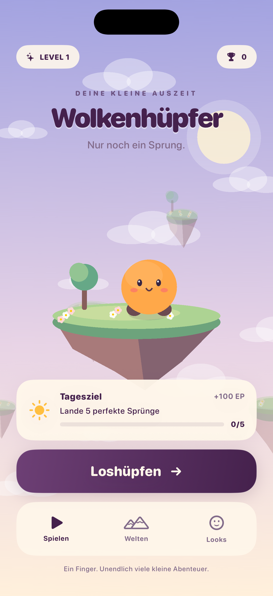

Ein Spiel für deine kleine Auszeit
Eine kleine Pause.
Ein großer Sprung.
Halten, aufladen, loslassen: In Wolkenhüpfer springst du von Insel zu Insel, sammelst Sterne und entdeckst neue Welten.
Ein iPhone-Spiel von Jakob Peters Netzwerk- und Mediendesign. Für kurze Runden zwischendurch – mit einer einfachen Steuerung und immer neuen persönlichen Rekorden.
In Entwicklung für iPhone · ab iOS 17 · noch kein App-Store-Download verfügbar

Dein nächster Sprung
Ein Finger. Viele neue Höhen.
- Sprung aufladen
Halte deinen Finger auf dem Spielfeld. Die Vorschau hilft dir beim Zielen.
- Perfekt landen
Lass los und lande möglichst mittig. Perfekte Serien bringen zusätzliche Punkte.
- Weiter entdecken
Sammle Erfahrung und Sterne, schalte Inhalte frei und überbiete deinen Rekord.
Welten, Looks und eine zweite Chance
Dein Fortschritt bleibt auf deinem Gerät gespeichert. Zusätzliche Saisonwelten und Looks sind als dauerhafte Einzelkäufe über Apple vorbereitet. Nach einem Fehlsprung kannst du einmal pro Runde freiwillig ein Werbevideo über Google AdMob ansehen, um eine zweite Chance zu erhalten. Ob eine Anzeige verfügbar ist, hängt unter anderem von der Werbeverfügbarkeit und den Datenschutzeinstellungen ab.
Käufe werden über Apple abgewickelt. Die App befindet sich noch in Entwicklung; die Verfügbarkeit der Käufe und Anzeigen hängt von der jeweiligen Freischaltung ab. Die Bestenlisten enthalten fiktive Gegner.